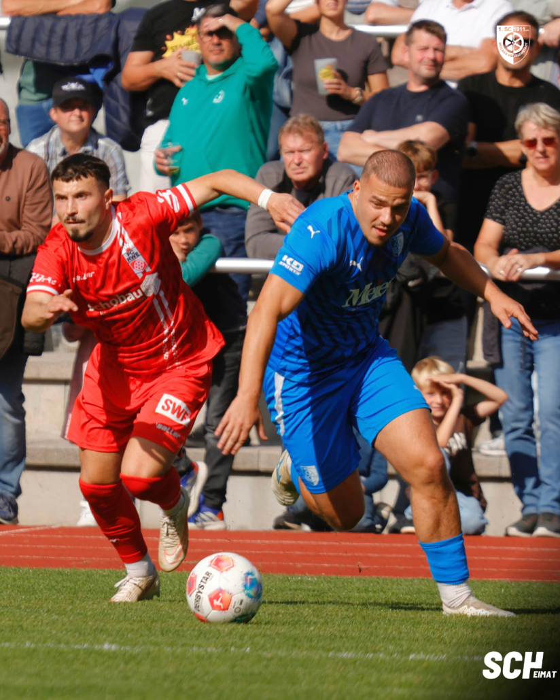

Spielbericht
Thüringer Landespokal · Achtelfinale
04.10.2026 · 14:00 Uhr · Gesundbrunnenstadion
BEENDETSpielinfo
1. SC 1911 Heiligenstadt – FC Rot-Weiß Erfurt 0 : 5
Thüringer Landespokal · Achtelfinale
04.10.2026 · 14:00 Uhr
Gesundbrunnenstadion · 2.265 Zuschauer
Schiedsrichter: Dössler
Früher Rückstand, lange in Unterzahl: SCH scheidet gegen Erfurt aus
04. Oktober 2026 · Michael Apel
Die Überraschung im Gesundbrunnen ist ausgeblieben. Unser SCH hat das Achtelfinale im Thüringer Landespokal gegen den FC Rot-Weiß Erfurt mit 0:5 (0:3) verloren. Drei Gegentore vor der Pause und der Platzverweis gegen Maciej Wolanski machten es der Mannschaft von Alexander Ludwig schwer, dem Nachmittag noch eine andere Wendung zu geben. Vor 2.265 Zuschauern endete damit der diesjährige Pokalwettbewerb für die Blau-Weißen. Ein deutliches Ergebnis, nach dem unser Trainer dennoch auch die guten Phasen seiner Mannschaft würdigte.
Ein Strafstoß bringt den SCH früh ins Hintertreffen
Lange ohne Gegentor bleiben und die Partie offenhalten. Wie wichtig das gegen den höherklassigen Gast werden würde, hatte sich schon vor dem Anpfiff abgezeichnet. Doch dieser Wunsch erfüllte sich für unseren Verbandsligisten nicht. In der 13. Minute brachte Stanislav Fehler den FC Rot-Weiß per Strafstoß in Führung. Damit musste die Ludwig-Elf schon früh einem Rückstand hinterherlaufen. Für einen Außenseiter ist das eine ungünstige Ausgangslage: Jeder eigene Angriff bietet die Möglichkeit zum Ausgleich, gleichzeitig darf die Absicherung gegen den Favoriten nicht verloren gehen.
Zwei weitere Treffer vor der Pause
Beim 0:1 blieb es allerdings nicht lange. Lucas Falcão erhöhte in der 22. Minute, ehe Marco Wolf zehn Minuten später das 0:3 erzielte. Innerhalb von 19 Minuten hatten die Gäste damit einen Vorsprung herausgespielt, der die Hoffnungen auf einen offenen Pokalkampf erheblich kleiner werden ließ. Für den SCH war bereits nach gut einer halben Stunde klar, wie schwer dieser Nachmittag werden würde. Aus einem frühen Rückstand war eine deutliche Hypothek geworden. Noch vor dem Seitenwechsel hatte Erfurt das Ergebnis geschaffen, das anschließend bis weit in die zweite Halbzeit Bestand haben sollte.
Wolanskis Platzverweis verschärft die Lage
In der 41. Minute folgte der nächste Rückschlag. Nach einem Foul von Luca Kerkemeyer ließ sich Maciej Wolanski zu einem Nachtreten hinreißen und sah die Rote Karte. Der Erfurter wurde mit Gelb verwarnt. Eine bittere Szene für die Blau-Weißen, die damit nicht nur ihren Angreifer verloren. Die gesamte zweite Hälfte musste unsere Mannschaft mit einem Spieler weniger bestreiten. Drei Tore zurück, dazu Unterzahl: Der Weg zurück in diese Partie war nun noch einmal deutlich länger geworden.
Mehr als eine Halbzeit mit zehn Spielern
Nach der Pause blieb Erfurt spielbestimmend. Für unsere Mannschaft bedeutete die Unterzahl zusätzliche Arbeit gegen den Ball und weniger Möglichkeiten, sich selbst nach vorne zu entfalten. Zunächst änderte sich am Ergebnis jedoch nichts. Erst in der 67. Minute traf Lucas Falcão zum 0:4. Zwischen dem dritten und vierten Gegentor lagen damit 35 Spielminuten, einen großen Teil davon hatte der SCH bereits zu zehnt absolviert. Den Schlusspunkt setzte erneut Falcão in der 78. Minute. Mit seinem dritten Treffer machte er das 0:5 perfekt. Ein eigener Torerfolg blieb den Blau-Weißen an diesem Nachmittag versagt.
Ludwig sieht trotz des Ergebnisses gute Ansätze
„Leider haben wir das 0:1 zu früh kassiert. Trotzdem hat meine Mannschaft es über weite Strecken richtig gut gemacht“, sagte Alexander Ludwig nach dem Abpfiff. Seine Einschätzung zeigt, dass sich die Bewertung dieses Spiels für ihn nicht auf die fünf Gegentore beschränkt. Der Trainer benannte den frühen Rückstand als Problem, stellte seiner Mannschaft aber zugleich ein differenziertes Zeugnis aus. Das Ergebnis bleibt deutlich. Dennoch gehören auch jene Abschnitte zur Aufarbeitung, in denen seine Elf aus seiner Sicht vieles ordentlich löste. Gerade nach einem solchen Pokalaus ist beides wichtig: die Fehler klar anzusprechen und die gelungenen Dinge nicht zu übersehen.
Enttäuschung über das Aus, Dank für die Unterstützung
Gegen einen Regionalligisten auszuscheiden, ist für einen Verbandsligisten kein ungewöhnliches Ergebnis. Weniger enttäuschend macht es den Abpfiff vor eigenem Publikum trotzdem nicht. Unser SCH hätte diesen Pokalnachmittag gerne länger offen gestaltet. Die drei Gegentore vor der Pause und der anschließende personelle Nachteil ließen dafür jedoch kaum noch Spielraum. Zum Heimspiel gehört zugleich der Dank an alle, die den Weg in den Gesundbrunnen gefunden haben, und an die Helfer rund um die Partie. Der sportliche Ausgang ist das eine. Der Einsatz für einen solchen Vereinsnachmittag verdient unabhängig davon Anerkennung.
Spieldaten
1. SC 1911 Heiligenstadt – FC Rot-Weiß Erfurt 0:5 (0:3)
SC Heiligenstadt
Fröhlich – Wolanski – Köhler – Abdoul Aziz (75. Lerch) – Jeschke – Göbel (75. Opfermann) – Hoch (85. Jargees Ali) – Michalek (57. Dornieden) – Schnellhardt – Voilenko – Fiedler (75. Vogt)
FC Rot-Weiß Erfurt
Rodtnick – Wolf (60. Caciel) – Fehler – Dreca – Mashigo (60. Dehl) – Walther – Becker (70. Schwarz) – Boboy – Kerkemeyer – Falcao – Andreichyk
Schiedsrichter
Dössler
Zuschauer
2265
Tore
0:1 Fehler (13.), 0:2. Falcao (22.), 0:3 Wolf (32.), 0:4 Falcao (67.) 0:5 Falcao (78.)
Stimmen
Alexander Ludwig
„Leider haben wir das 0:1 zu früh kassiert. Trotzdem hat meine Mannschaft es über weite Strecken richtig gut gemacht.“
Unser Trainer nach dem Pokalspiel gegen Rot-Weiß Erfurt.
Das Spiel in Bildern
Spielverlauf
Ausgewählte Ereignisse · Quelle: FuPa
- 16′Tor · Strafstoß0 : 1
Stanislav Fehler
- 22′Tor0 : 2
Lucas Falcao
- 37′Tor0 : 3
Marco Wolf
- 42′Rote Karte0 : 3
Maciej Wolanski
- 64′Tor0 : 4
Lucas Falcao
- 77′Tor0 : 5
Lucas Falcao
Gespeicherter FuPa-Stand: 06.10.2026. Einzelne Minutenangaben weichen vom Vereinsbericht ab.
Statistiken
1. SC 1911 Heiligenstadt · FC Rot-Weiß Erfurt
2.265 Zuschauer im Gesundbrunnenstadion.
Quelle: SCH-Spielbericht. Weitere Statistikwerte liegen nicht vor.
Aufstellung
SC Heiligenstadt
Fröhlich – Wolanski – Köhler – Abdoul Aziz (75. Lerch) – Jeschke – Göbel (75. Opfermann) – Hoch (85. Jargees Ali) – Michalek (57. Dornieden) – Schnellhardt – Voilenko – Fiedler (75. Vogt)
FC Rot-Weiß Erfurt
Rodtnick – Wolf (60. Caciel) – Fehler – Dreca – Mashigo (60. Dehl) – Walther – Becker (70. Schwarz) – Boboy – Kerkemeyer – Falcao – Andreichyk
Quelle: SCH-Spielbericht vom 04.10.2026